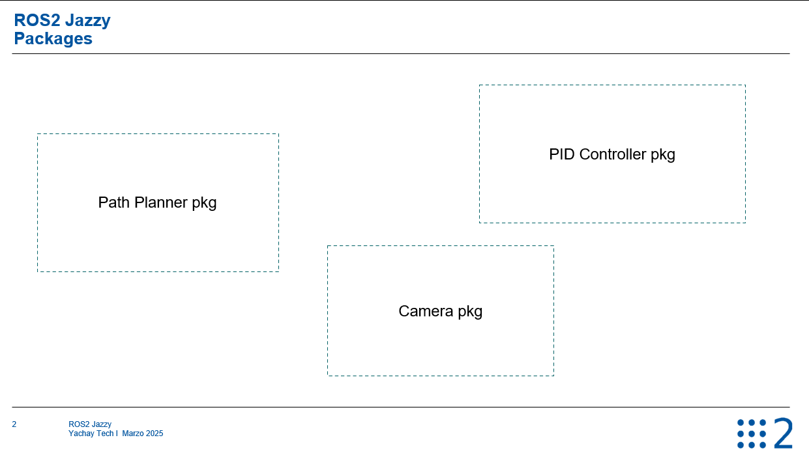

Aprenderás a crear un paquete Python en ROS 2, organizarlo correctamente dentro de tu workspace y prepararlo para desarrollar nodos.
📘 Notas de la clase
1. ¿Qué es un paquete en ROS 2?

Un paquete puede controlar una cámara.
Otro paquete puede controlar los motores.
Otro puede encargarse de la planificación de movimiento.
2. Ubicación del
paquete
Todos los paquetes deben crearse dentro de la carpeta
src de tu workspace en ~/ws/src.
3. Comando para crear un paquete
Python
Desde el directorio ~/ws/src, ejecuta:
ros2 pkg create my_py_pkg --build-type ament_python --dependencies rclpy
my_py_pkg es el
nombre del paquete (usa guiones bajos para separar palabras).
--build-type ament_python especifica que es un paquete Python.
--dependencies rclpy indica que se usará la librería Python de ROS 2.
4. Estructura generada del paquete
Después de crear el paquete, se generará la siguiente estructura:
my_py_pkg/
(carpeta principal del paquete)
my_py_pkg/ (donde irá tu código Python)
__init__.py (necesario para reconocerlo como módulo Python)
resource/ (archivos internos usados por ROS 2, no modificar)
test/
(para pruebas automáticas, por ahora no es necesario)
package.xml (metadatos del paquete: nombre, versión, dependencias,
etc.)
setup.py y setup.cfg
(necesarios para instalar y lanzar nodos)
5. Visual Studio Code: abrir
correctamente el proyecto
Para evitar errores de
autocompletado o de importación en VS Code:
Desde ~/ws/src,
abre VS Code con:code .
6. Compilar el
paquete
Desde la raíz del workspace ~/ws (nunca desde src), compila con:
colcon build
7. Compilar solo un paquete
específico (opcional)
Puedes compilar solo un paquete
indicando su nombre:
colcon build --packages-select my_py_pkg
Esto es útil cuando tienes muchos paquetes en el workspace.
8. Sobre el archivo package.xml
Este
archivo contiene:
Nombre del paquete
Descripción
Versión
Licencia (no obligatorio para proyectos personales)
Dependencias (<depend>rclpy</depend>)
Tipo de construcción (ament_python)
💾 Código trabajado / recursos
Código trabajado: ~/ws/src/my_py_pkg